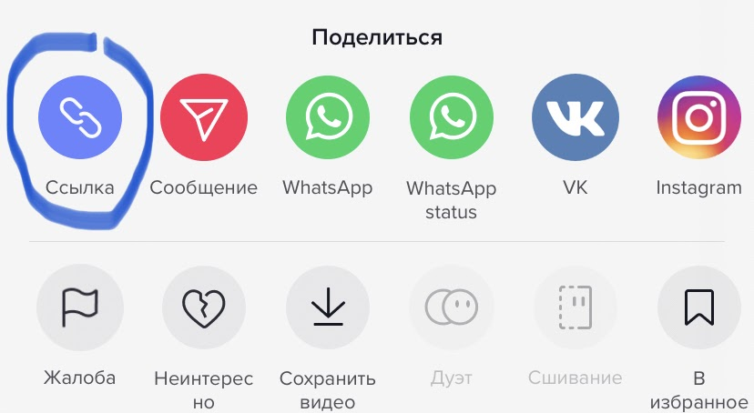

How to download a video from Tik tok without a watermark an iPhone?
If you own an iPhone smartphone or an Apple tablet.
- First you need to launch the official Tik Tok application.
- Start TikTok and find the necessary video, then tap on the "Share" icon.
- In the window that opens, you need to select the icon with the name "Link":
 - Copy this link and paste it into the special field for the link on our website and click " Download”:

- After going to the download page, click the download video button or you can immediately download the audio track to mp3:
Enjoy the video! 😊